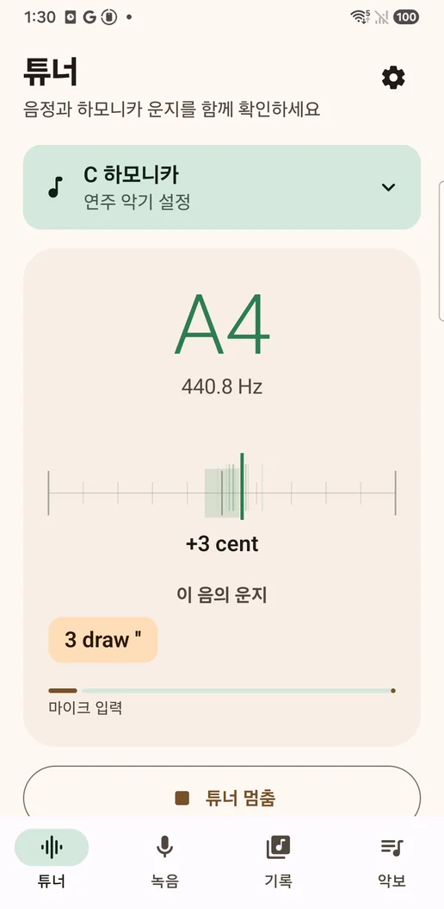
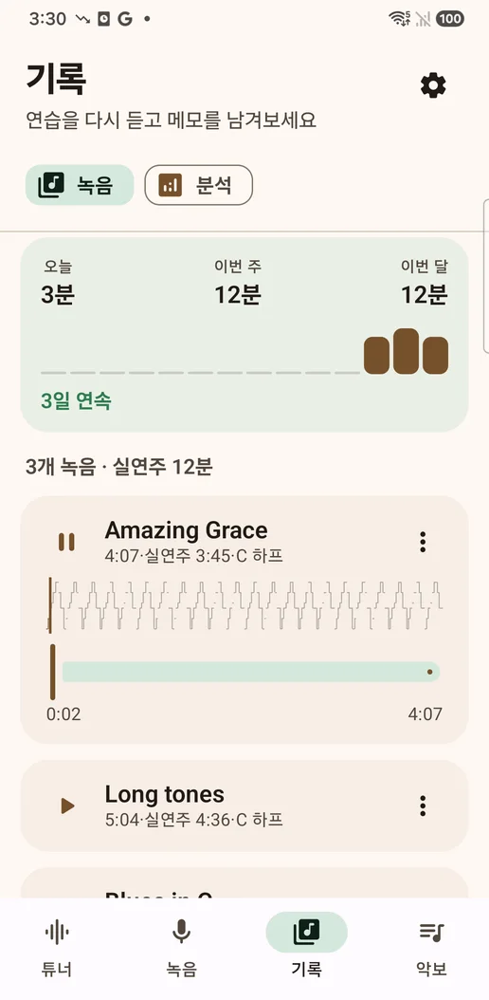
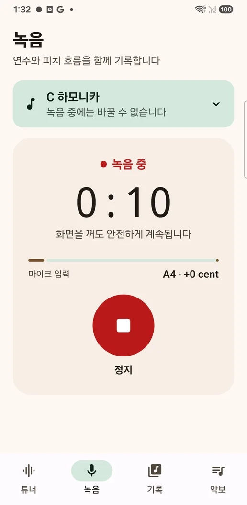
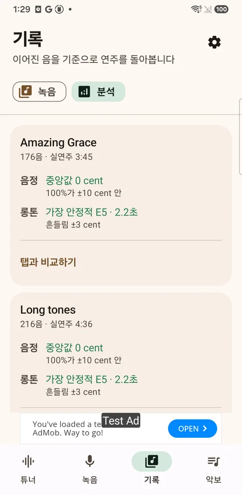
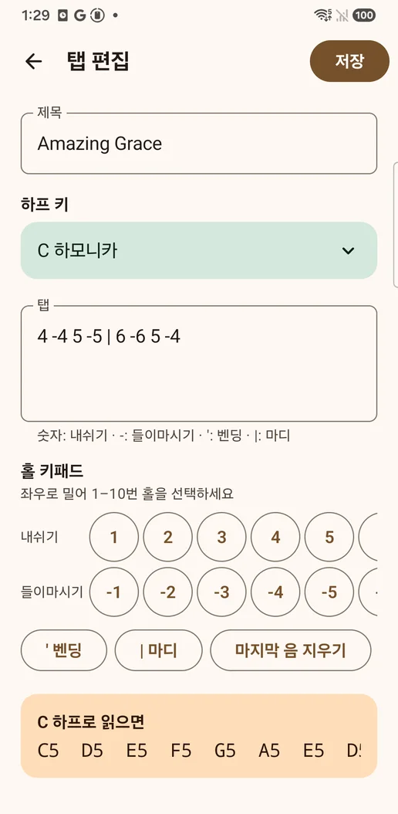
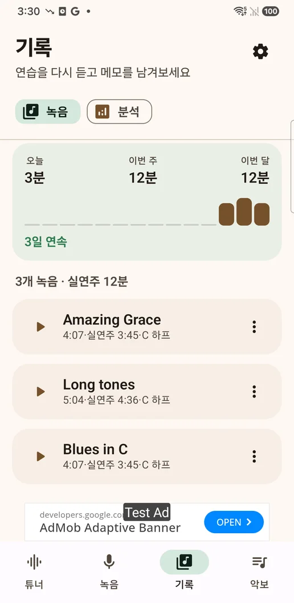

나는 자리를 전부
C 하프의 G4는 2번 들이마시기와 3번 내쉬기 두 곳이라 후보를 함께 띄웁니다. 벤딩은 3'은 한 반음, 3''은 두 반음처럼 연주자가 쓰는 표기 그대로이고, 실제로 반음까지 굽지 않는 자리는 따로 표시합니다.
10홀 하모니카를 위한 튜너와 연습 기록
일반 튜너는 "지금 A4, 1센트 높음"에서 멈춥니다. 이 앱은 검출한 음을 몇 번 홀, 들이마시기인지 내쉬기인지, 벤딩 몇 단계인지로 되돌려 보여주고, 화면을 꺼도 녹음을 이어갑니다.
Google Play 출시 준비 중English · 日本語 · 한국어 · Android


음을 운지로
같은 A4라도 C 하프에서는 3번 홀을 들이마시며 두 반음 굽혀야 나오는 음이고, 다른 키의 하프에서는 아예 다른 자리에 있습니다. 음 이름만 알려주면 그 환산은 연주자의 몫으로 남습니다.
C 하프의 G4는 2번 들이마시기와 3번 내쉬기 두 곳이라 후보를 함께 띄웁니다. 벤딩은 3'은 한 반음, 3''은 두 반음처럼 연주자가 쓰는 표기 그대로이고, 실제로 반음까지 굽지 않는 자리는 따로 표시합니다.
자동 음량 조절과 잡음 제거를 끄고 무손실 WAV로 저장하며, 부는 동안 음높이도 함께 기록합니다. 통화가 오면 그때까지의 연주를 저장하고, 통화가 끝나면 이어서 녹음합니다.
음정·롱톤·벤딩을 어택과 숨이 아닌 지속된 음에서 측정합니다. 벤딩은 굽혀서만 낼 수 있는 음일 때만 판정합니다. 연습량은 실제로 소리를 낸 시간으로 셉니다.
앱 미리보기




녹음·피치 기록·메모·가져온 악보는 기기에 저장됩니다. 자체 서버가 없고, 이 파일들을 광고 SDK에 전달하지도 않습니다. 배너 광고는 기록과 악보 목록에만 표시되며 튜너나 녹음 중에는 나오지 않고, 일회성 구매로 없앨 수 있습니다.